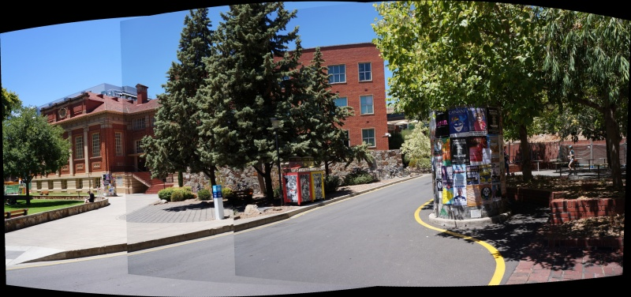
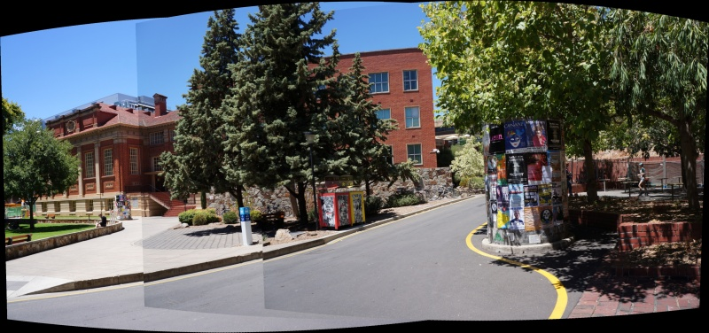
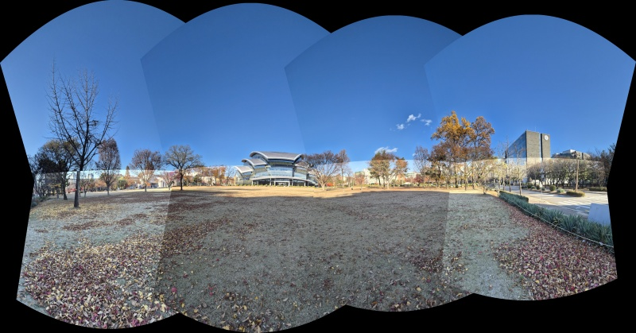
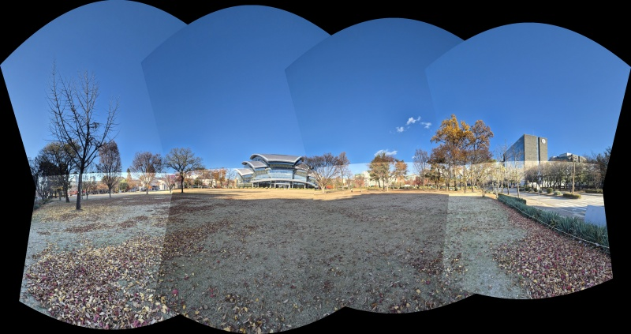
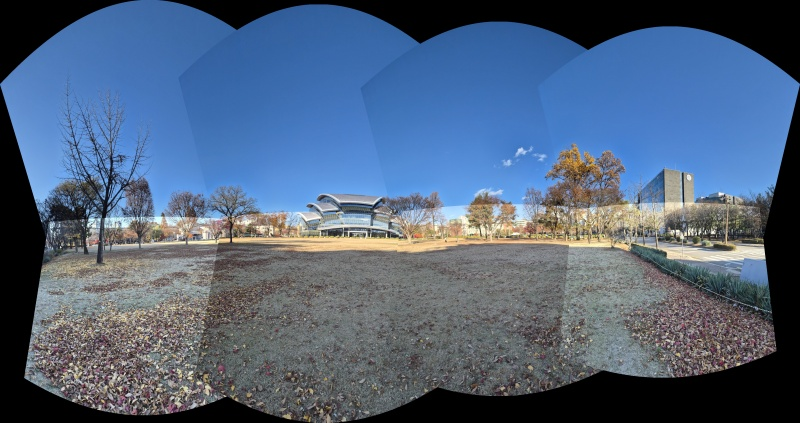
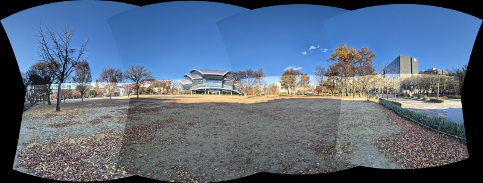
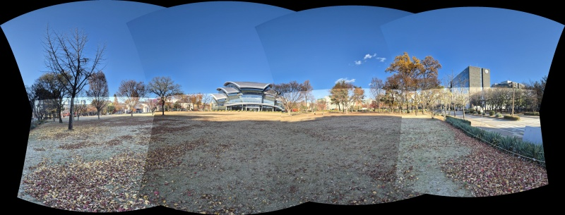
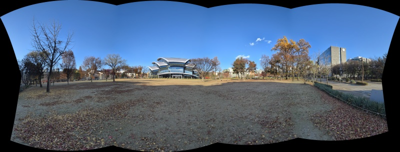
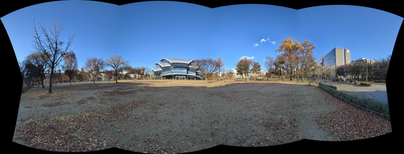

Q1·Q2·Q3·E1: 노출 보정·이음선·블렌딩 OFF. E2: 영상별 gain + 최대 가중치 마스크 + 5-band blending. 이미지를 누르면 원본 PNG가 열립니다.
네 방법 모두 NumPy ray BA를 사용합니다. 기존 brown+lowe baseline의 OpenCV BA와 구현이 다릅니다. APAP는 공통 투영 좌표계 위 Moving DLT 보정의 과제용 확장으로 원 논문 BAMDLT의 완전 재현이 아닙니다.
시간은 읽기·PNG 저장을 포함한 1회 실행입니다. 아래 결과는 HPatches/UDIS-D 평가가 아니며, fitting 진단 수치도 독립 대응점 정확도가 아닙니다.
| 미션 | RootSIFT설정·진단 | MAGSAC++설정·진단 | RootSIFT+MAGSAC++설정·진단 | RootSIFT+MAGSAC+++APAP설정·진단 |
|---|---|---|---|---|
| Q1 | 1385×580 · 0.12초실행 로그 | 1385×580 · 0.1초실행 로그 | 1385×580 · 0.1초실행 로그 | 1385×580 · 0.14초실행 로그 |
| Q2 | 2969×1396 · 0.95초실행 로그 |  2968×1396 · 1.01초실행 로그 |
 2978×1398 · 1.11초실행 로그 |
2978×1398 · 1.63초실행 로그 |
| Q3 |  4712×2465 · 1.72초실행 로그 |
 4696×2481 · 1.64초실행 로그 |
 4699×2482 · 1.82초실행 로그 |
4699×2482 · 2.39초실행 로그 |
| E1 |  4712×1791 · 1.66초실행 로그 |
4696×1794 · 1.59초실행 로그 |  4699×1792 · 1.76초실행 로그 |
4699×1792 · 2.24초실행 로그 |
| E2 |  4712×1791 · 1.74초실행 로그 |
4696×1794 · 1.65초실행 로그 |  4699×1792 · 1.84초실행 로그 |
4699×1792 · 2.31초실행 로그 |
재실행: python3 -B experiments/run_methods.py